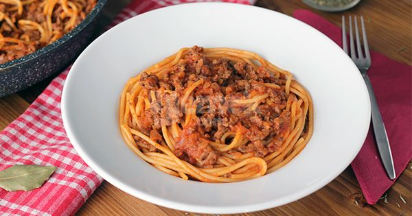

Kıymalı Makarna Tarifi
Çocukluğumuzdan beri severek yediğimiz yemeklerin başında gelir kıymalı makarna. Makarna tariflerinin en doyurucusu, en ana yemek gücündeki haliyle tanışın.
Hazırlayan : Berat Oruç
Kaç Kişilik
4 Kişilik
Hazırlanma Süresi
15 Dakika
Pişirme Süresi
20 Dakika
Kıymalı Makarna Tarifi İçin Gerekli Malzemeler
1/2 paket spagetti (250 g)
2 yemek kaşığı zeytinyağı
300 gram orta yağlı kıyma
1 adet kuru soğan
1 diş sarımsak
1 yemek kaşığı domates salçası
1 su bardağı domates püresi
1 su bardağı sıcak su
1,5 çay kaşığı tuz
1 çay kaşığı pulbiber
1 çay kaşığı karabiber
1/2 çay kaşığı acı toz biber
1 adet defne yaprağı
2 kepçe makarnanın haşlanmış suyu
Kıymalı Makarna Tarifi Nasıl Yapılır?
Kıymalı sos için geniş bir tavaya zeytinyağını alın ve ısındıktan sonra kıymayı ekleyerek kavurmaya başlayın.
3-4 dakika sonra domates salçasını ekleyin ve kıymayla bütünleşene dek karıştırın. 1-2 dakika bu şekilde pişirin.
Ardından domates püresini, sıcak suyu, baharatlarını ve tuzunu ekleyip karıştırın.
Sos pişerken spagetti makarnayı paketi üzerinde belirtilen yönlendirmelere göre haşlayın.
Sosun kıvamını kontrol ettikten sonra ayırmış olduğunuz 2 kepçe haşlama suyunu ekleyin, hafifçe karıştırın.
Haşlayıp süzmüş olduğunuz spagetti makarnayı sosun içerisine alıp güzelce karıştırın.
İsteğe göre üzerine olgunlaşmış peynir rendeleyip servis edebilirsiniz, afiyet olsun!
